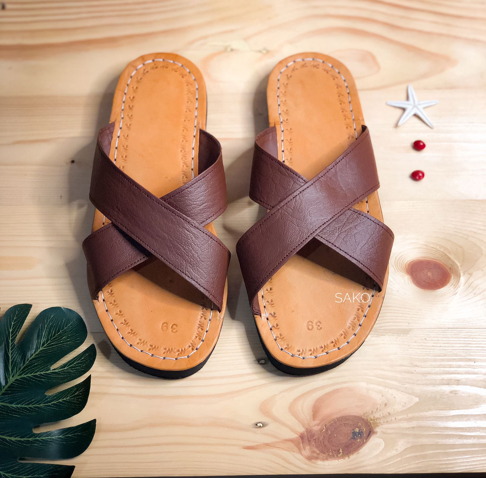

Silang Coklat
Sandal model Silang Coklat adalah pilihan yang sempurna untuk gaya santai dan kasual. Didesain dengan siluet silang yang elegan, sandal ini memberikan sentuhan yang trendi namun tetap nyaman untuk dipakai sehari-hari. Bahan berkualitas tinggi digunakan dalam pembuatannya, memberikan kekokohan dan daya tahan yang baik. Warna coklat yang hangat dan netral membuat sandal ini cocok dipadukan dengan berbagai pakaian, baik untuk acara santai maupun formal yang lebih kasual. Sol yang nyaman dan desain yang ergonomis menjadikan sandal model Silang Coklat pilihan yang stylish dan praktis untuk menemani aktivitas sehari-hari Anda.
